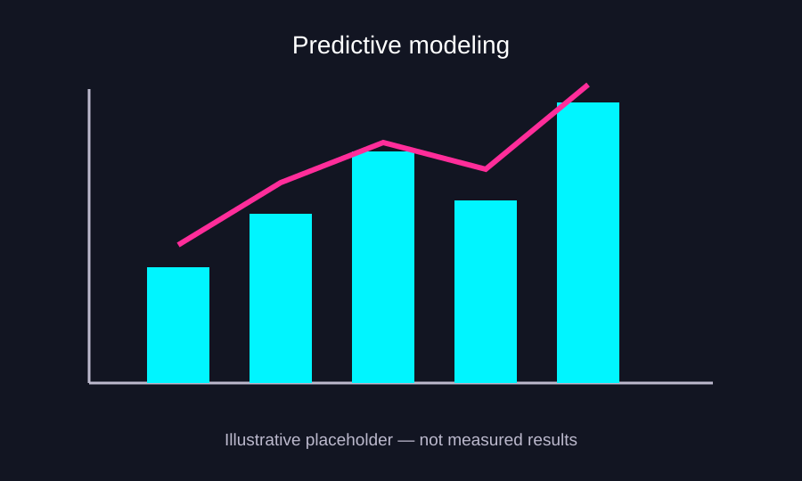

PROJECT CASE STUDY
Coal Ash Predictive Modeling
Multi-output machine learning to estimate chemical composition and support critical minerals research.
01Project summaryScope and context
02MethodologyHow I approached the work
I used multi-output machine learning to estimate coal ash chemical composition from available predictors. This page describes the modeling approach at a high level because the project data and internal scripts are not publicly available.
03FiguresProject visual

PROJECT TAKEAWAYS
Why This Project Matters
Predicting material properties from complex data
Practical and scientific value
Modeling coal-ash chemistry can help researchers explore relationships among measured properties and estimate constituent concentrations for further investigation. Predictions are analytical estimates that require validation; they do not replace laboratory testing.
What it demonstrates as a data scientist
This work demonstrates Python-based regression modeling with XGBoost, including multi-output targets, model evaluation and interpretation of uneven performance across chemical constituents. It sharpened my ability to assess where a model generalizes well, where it does not and how predictive results should be communicated responsibly.